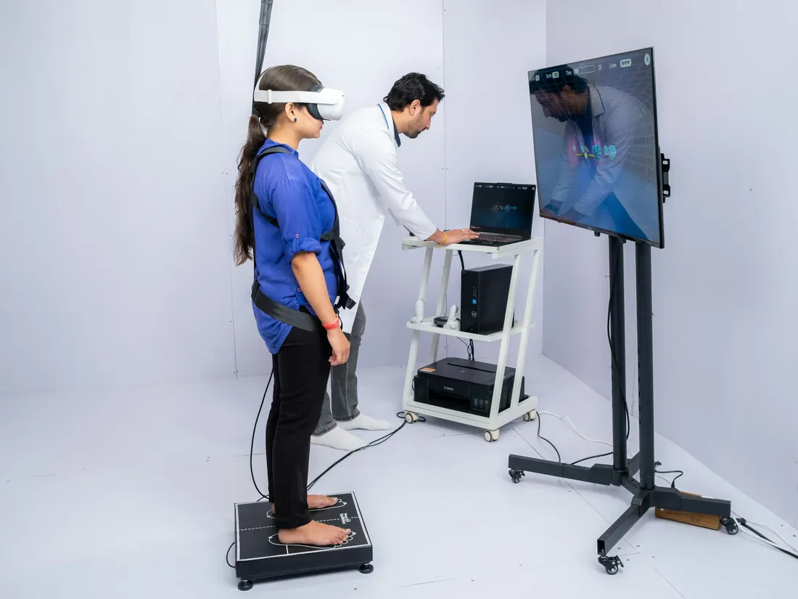

Neurorehabilitación
Acompañamiento a personas con alteraciones del movimiento, el equilibrio, la cognición o la comunicación de origen neurológico, como las que pueden presentarse después de un evento cerebrovascular o un trauma.
Consultar disponibilidad de neurorehabilitación